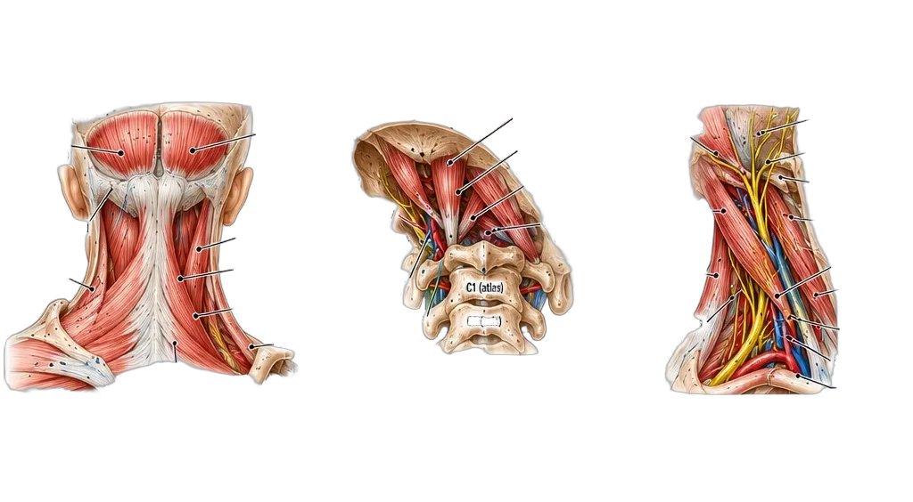

The Posterior Neck Power Grid
Occipitals · Suboccipitals · Levator Scapulae
Understand the Source. Treat the Cause. Restore Function.
Occipitals · Suboccipitals · Levator Scapulae
Understand the Source. Treat the Cause. Restore Function.
The posterior neck houses some of the most overlooked sources of headaches, neck pain and shoulder dysfunction. Three muscle groups — the occipitalis, the four suboccipital muscles and the levator scapulae — work together to control head position, stabilize the cervical spine and influence the shoulder girdle. Each has a unique attachment and a distinct referred pain pattern.

| Muscle | Origin | Insertion | Innervation |
|---|---|---|---|
| Occipitalis | Superior nuchal line | Epicranial aponeurosis | Facial nerve (CN VII) |
| Suboccipitals (4) | C1–C2 (atlas/axis) | Inferior nuchal line / transverse processes | Suboccipital nerve (C1) |
| Levator Scapulae | C1–C4 transverse processes | Medial border of scapula | Dorsal scapular nerve (C5) |
| Muscle | Primary Pain Location | Radiation | Key Feature |
|---|---|---|---|
| Occipitalis | Back of head / scalp | Top of head | Scalp tenderness |
| Suboccipitals | Base of skull | Forehead, eye, temple | Mimics migraine |
| Levator Scapulae | Side of neck / shoulder | Scapula, arm (C5–C6) | Mimics cervical radiculopathy |